Robot de trading automatizado com resultados verificados. Conecte-se em minutos e deixe o algoritmo trabalhar por você — sem experiência necessária.
Dados verificados por myfxbook — transparência total.
14 passos com capturas reais do app — do zero ao robot conectado.
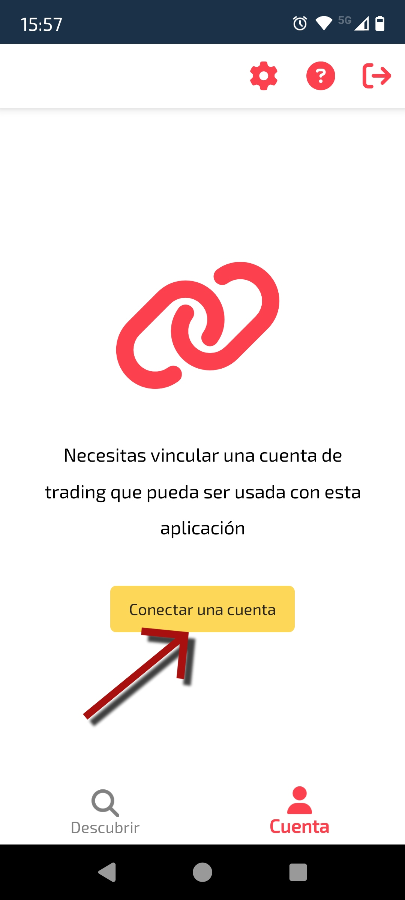
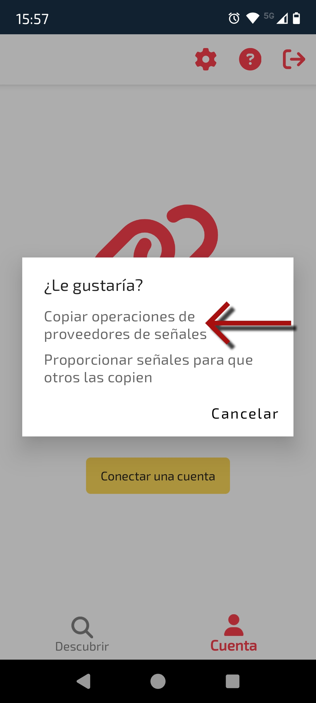
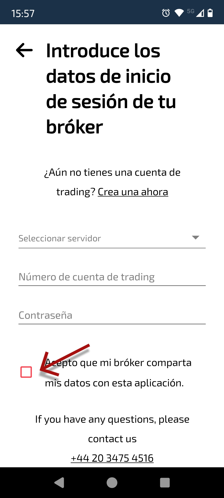
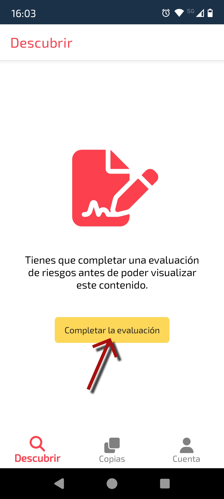
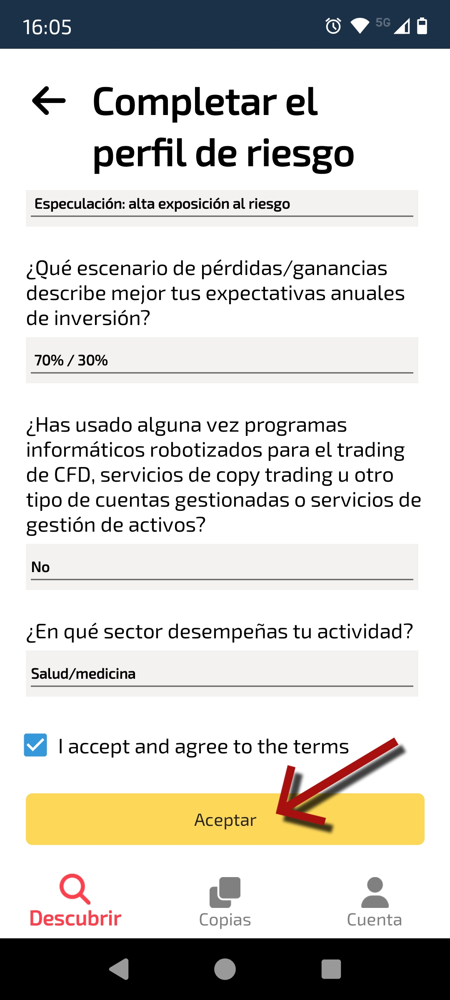
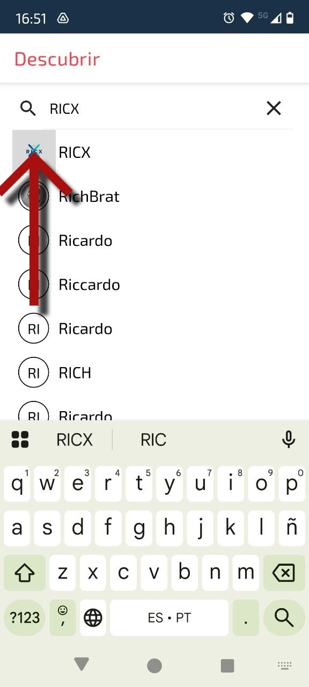
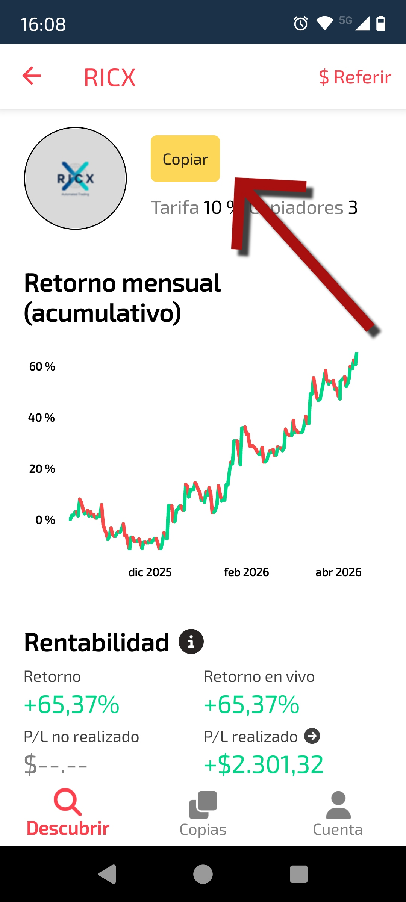
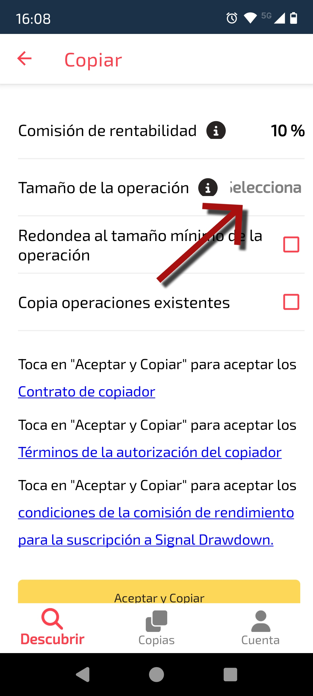
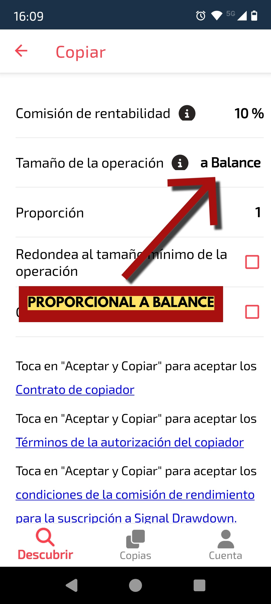
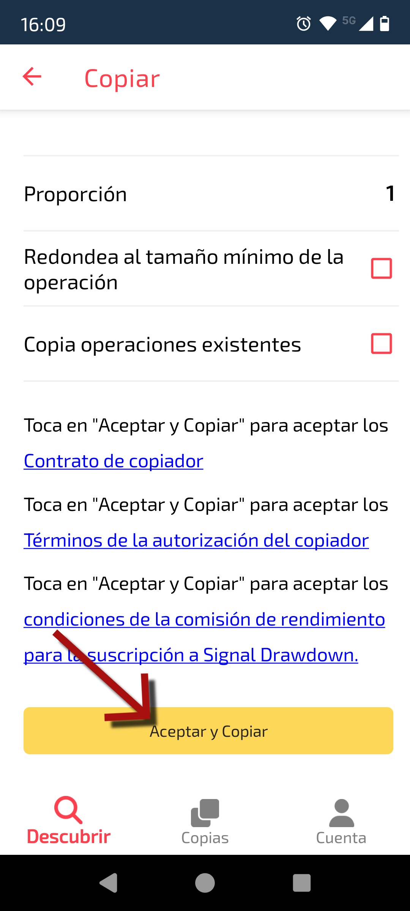
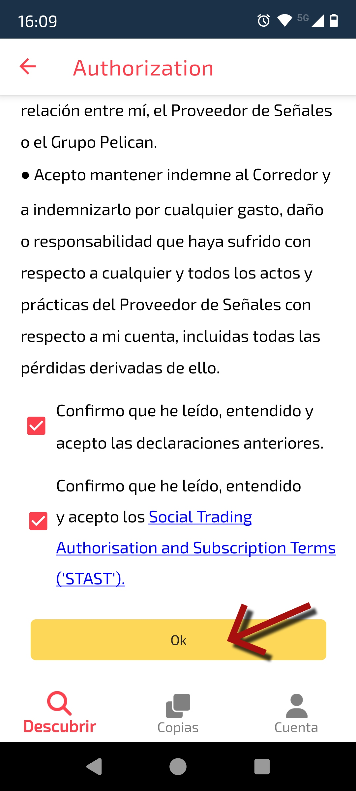
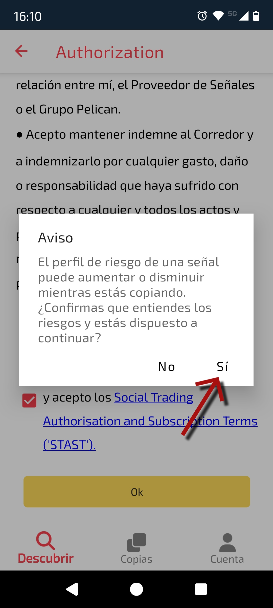
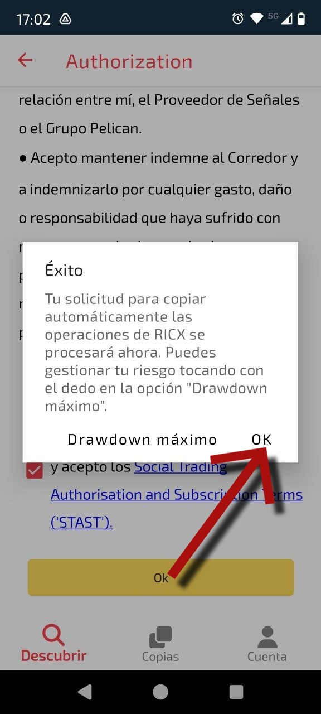
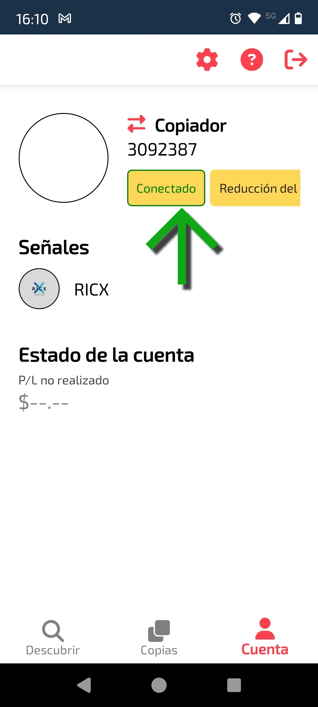
Tutorial completo em vídeo para você não perder nenhum passo.